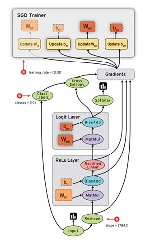

import pandas as pd
import numpy as np
import matplotlib
import matplotlib.pyplot as plt
import pylab
import snips as snp
%matplotlib inline
Install TensorFlow on Windows and a Virtual Environment¶
TensorFlow is now supported in Windows, yay! The very simple installation instructions for Windows are here. All you need to do to get the non-GPU (normal person with normal laptop) version is create an new virtual environment and install tensorflow:
conda create --name=tensorflow
conda activate tensorflow
pip install --ignore-installed --upgrade https://storage.googleapis.com/tensorflow/windows/cpu/tensorflow-1.0.0-cp35-cp35m-win_x86_64.whl
pip install tensorflow-1.0.0-cp35-cp35m-win_amd64.whl
You'll still get warnings, but they are OK. Now, you want to be able to use jupyter notebooks inside your tensorflow environment, so refer to this great stack overflow explanation of how to make Jupyter recognize conda environments as kernels. Essentially you just need your environment to have three packages:
conda install jupyter
conda install ipykernel
conda install nb_conda_kernels
Then make sure to restart the jupyter server and select kernel > change kernel to change this notebooks environment! Now we are ready to test our tensorflow install!
import tensorflow as tf
hello = tf.constant('Hello, TensorFlow!')
sess = tf.Session()
print(sess.run(hello))

In the above image squares represent stateful objects whereas circles represent computes.
Visualizing Graphs Inline in Jupyter¶
Thanks to this stackoverflow answer which pointed me to this awesome notebook in which some functions are defined for inline visualization (relying on the built-in TensorBoard visualization capabilities). Copy/pasting from there (but commenting out so that my "notebook to HTML plugin" for generating articles doesn't act funny):
# from IPython.display import clear_output, Image, display, HTML
# # Helper functions for TF Graph visualization
# def strip_consts(graph_def, max_const_size=32):
# """Strip large constant values from graph_def."""
# strip_def = tf.GraphDef()
# for n0 in graph_def.node:
# n = strip_def.node.add()
# n.MergeFrom(n0)
# if n.op == 'Const':
# tensor = n.attr['value'].tensor
# size = len(tensor.tensor_content)
# if size > max_const_size:
# tensor.tensor_content = bytes(""%size, 'utf-8')
# return strip_def
# def rename_nodes(graph_def, rename_func):
# res_def = tf.GraphDef()
# for n0 in graph_def.node:
# n = res_def.node.add()
# n.MergeFrom(n0)
# n.name = rename_func(n.name)
# for i, s in enumerate(n.input):
# n.input[i] = rename_func(s) if s[0]!='^' else '^'+rename_func(s[1:])
# return res_def
# def show_graph(graph_def=None, max_const_size=32):
# """Visualize TensorFlow graph."""
# # If no input graph is given, get the default graph
# if graph_def is None:
# graph_def = tf.get_default_graph().as_graph_def()
# if hasattr(graph_def, 'as_graph_def'):
# graph_def = graph_def.as_graph_def()
# strip_def = strip_consts(graph_def, max_const_size=max_const_size)
# code = """
#
#
#
# Also check out this good article on how to use names and namespaces in your graph to get sensible and legible visualizations from TensorBoard. It follows the official docs on the same topic.
Finally, another helpful thing to know before starting is the function to clear the default graph of all its nodes so you can start fresh:
tf.reset_default_graph() # To clear the default graph
Computational Graphs¶
The key to not being intimidated by tensor flow is having a basic grasp of what computational graphs are before you jump in. There are only two resources you need here, and I recommend you avail yourself of both:
- Christopher Olah's excellent and short blog post on computational graphs and backprop.
- Andrej Karpathy's excellent video lecture introducing computational graphs. You only need to watch the first 50 minutes.
Walkthrough of TensorFlow Official "Get Started" Guide¶
This is a walk-through of the official "Get Started" tutorial under the "Develop" tab at tensorflow.org here. In my walkthrough I will show the evolution of the computational graph in a lot more detail and I try to explain the steps in terms of editing the graph.
Overview¶
TensorFlow exposes various levels of API, the high-level one is tf.contrib.learn, but many people instead use the external python library keras to provide a simpler high-level syntax for working with TF. The lowest level API is called TensorFlow Core (TFC) and provides the maxmium amount of flexibility. TFC scripts consist of building a computational graph and then running that graph. According to the documentation:
A computational graph is a series of TensorFlow operations arranged into a graph of nodes... Each node takes zero or more tensors as inputs and produces a tensor as an output.
This is the source of the name "TensorFlow" - the basic function of this tool is to flow tensors around in a graph! Remember, tensors can be scalar constants, vectors, matrices and higher-dimensional arrays.
Constants¶
One type of node is tf.constant which takes zero inputs and outputs a stored 0D tensor. The value of a constant node is not it's stored value, instead when that node is evaluted during the running a graph it outputs its stored value. A graph can also include operation nodes like tf.add.
You use your python or C++ front-end (THIS) to build your graph, but then the graph is sent to your runtime for actual computation. You talk to the run-time via a Session, which is the object responsible for controlling and holding state for the TF runtime.
We can build a simple graph with a few constants and a few operations and then run it to force those nodes to be evaluated. Notice we can give names to our nodes and make the graph easier to understand:
tf.reset_default_graph() # To clear the default graph
node1 = tf.constant(3.0, name="firstconst")
node2 = tf.constant(4.0, name="secondconst")
node3 = tf.add(node1, node2, name="sum")
node4 = tf.divide(node3, node1, name="sumdiv")
sess = tf.Session()
sess.run([node1, node2, node3, node4])
When we visualize this graph we see circles represent constant nodes and ovals represent operation nodes! Also notice that little arrows with flat heads are indicating the flow of constants into nodes, while large arrows with curved heads are indicating the flow of data from one node to another.
show_graph()
Visualizing the graph very helpful, but you can also see a full specification of the graph in a JSON-like syntax by using:
graphdef = tf.get_default_graph().as_graph_def()
nodes = iter(graphdef.node)
print(next(nodes))
Placeholders¶
What if we don't want to hardcode the values for node1 and node2 but instead provide them at runtime? A placeholder node is a stand in for a constant value that will be provided later. You pass a dictionary of values or sets of values to the session at runtime and those values stay fixed during the running of the graph.
tf.reset_default_graph() # To clear the default graph
a = tf.placeholder(tf.float32)
b = tf.placeholder(tf.float32)
adder_node = a + b # + provides a shortcut for tf.add(a, b)
show_graph()
In this case we can see that the placeholder is actually an operation, not a constant, and it flows data to the sum operation node. Also notice the naming convention that TF is substituting since we didn't pass our own values of the name kwarg.
sess = tf.Session()
print(sess.run(adder_node, {a: [1,3], b: [2, 4]}))
Variables¶
In contrast to a constant with a fixed value at definition or a placeholder with fixed value that is passed at runtime, a variable node is a trainable parameter of your graph in that it's value can change during running.
tf.reset_default_graph() # To clear the default graph
W = tf.Variable([.3], tf.float32, name="W")
b = tf.Variable([-.3], tf.float32, name="b")
x = tf.placeholder(tf.float32, name="x")
show_graph()
Now W, b and x are node TF objects, but we can use standard python math to create new operations and flow edges from them. In this case, the handle linear_model is pointing at the sub-graph (subset of nodes and edges) that encompass the calculation:
linear_model = W * x + b
show_graph()
Here a multiply operation receives data flowed from the placeholder x and variable W and the ouput is flowed into an add operation node together with data from variable b. You must provide an initialization value to tf.Variable during declaration, but the initialization won't actually be executed until create initialization nodes and then run the graph asking it to evaluate those nodes. The convenience function tf.global_variables_initializer() creates the appropriate nodes and returns a handle to them that you can pass to run.
# Initialize all the variables
init = tf.global_variables_initializer() # Create nodes necessary for initialization, return handle to subgraph
print(init)
show_graph()
Notice that a new "auxiliary" graph appears with the init node ("auxilliary" is just a visualization scheme, it doesn't actually mean anything in terms of the computational structure of the graph). By asking the runtime to evaluate the init node, we execute computations that set the values of W and b with their initialization values. Since the graph holds state, those are now the starting values for our variables. Note that we can NOT just ask the runtime to evaluate other nodes in the graph and expect it to do the initialization first.
# Run the graph with initialization computations in the graph
sess = tf.Session()
sess.run(init)
After initialization we can ask the session to run the graph to evaluate the output of the linear_model node given a bunch of values to the placeholder x.
# Run the graph to evaluate the node linear_model for different placeholder values
sess.run(linear_model, {x:[1,2,3,4]})
Losses¶
So we built a model that can take in a vector of different values of $x$ and produce an output vector $y$ which is a linear function of $x$ depending on the value of the variable nodes. To evaluate how well this output $y$ of our model compares with some real values of $y$ that we have, we need to define a loss function. A common loss is the squared difference between the ouput and the ground truth (observed) $y$ - this is already implemented in TF:
# Add nodes into our pre-existing graph
y = tf.placeholder(tf.float32, name="y") # The ground truth passed at runtime
squared_deltas = tf.square(linear_model - y, name="sq_err") # Subgraph to get a vector of sq. errs.
loss = tf.reduce_sum(squared_deltas, name="sq_err_sum") # Subgraph that sums across the vector ("reduces")
show_graph()
The call to tf.square(linear_model - y) created two nodes, one for the subtraction operation and one for the square, whereas the call to tf.reduce_sum has created a whole set of new nodes that will help compute the single number that is sum of squared errors given input vectors $\vec{x}$ and $\vec{y}$. We can imagine that Rank takes in the tensor output of err and outputs the dimensions of that tensor - this is then fed into range which creates a set of indices for which elements will be involved in the final sum (all of them in this case). This range tensor and the tensor holding the actual errors, err then get fed into a sum operation node.
# Evaluate the loss subgraph with a set of inputs x and y
sess.run(loss, {x:[1,2,3,4], y:[0,-1,-2,-3]}) # Run graph to compute the output of the loss node
Optimizers (Training)¶
Obviously we don't want to manually change the values of W and b based on guesswork. Instead we want to algorithmically change their values to minimize the tensor output of loss i.e. we want to train our model and learn good values for these parameters. The machines to do this are "optimizer" classes. The optimizer is not a node or subgraph, but it it has methods that build the subgraphs necessary for optimization. For intance, to build a subgraph that minimizes the output of our loss subgraph we can do:
optimizer = tf.train.GradientDescentOptimizer(0.0002)
train_step = optimizer.minimize(loss)
show_graph()
This is looking a little messier now but still interpretable. The nodes in our original graph now also output tensors to a new node gradients. The output tensor of gradients is fed into a second new node GradientDescent which also takes tensor input from W and b.
Instead of using the convenience minimize method, we could actually have created these two pieces independently with the code:
optimizer = tf.train.GradientDescentOptimizer(0.01)
grads_and_vars = optimizer.compute_gradients(loss) # Subgraph to compute gradients of loss w.r.t. all Variable nodes (default)
updates = optimizer.apply_gradients(grads) # Subgraph to update the Variable nodes using the computed gradients
Operations Details of Graph¶
Visualizing operations as nodes hides a lot of what happens when we run this graph - each node can entail a large block of functional code. We can see more details of what happens in each node with the get_operations() method of our graph:
for op in tf.get_default_graph().get_operations(): print(op.name)
Now we can see that the gradients node is computing gradients, while the GradientDescent node is "updating" or modifying the values of W and b.
Training the Model¶
To actually "train" this model is as simple as running the graph by feeding in a set of sample points via our placeholders x and y. For each pair of values the GradientDescent node will update the value of W and b, and if we want to do multiple passes through our sample data (epochs) the graph will hold state in between them. First let's make some data which corresponds to a real-world noisy relationship $y(x)$:
# Make date for the model y = 2x + 4 + random noise and plot it
x_train = np.random.rand(100).astype(np.float32)
noise = np.random.normal(scale=0.1, size=len(x_data))
y_train = 2*x_train + 4 + noise
pylab.plot(x_train, y_train, '.')
snp.labs("Example X Data", "Example Y Data", "Example Data for TensorFlow Linear Regression")
![](data:image/png;base64,iVBORw0KGgoAAAANSUhEUgAAAYUAAAEWCAYAAACJ0YulAAAABHNCSVQICAgIfAhkiAAAAAlwSFlz
AAALEgAACxIB0t1+/AAAIABJREFUeJzt3XmUXHWd9/H3pxMiRBMIi7KEBBkwCFFmkpbl6CCI4xEG
YRxQFlFBBVEUR0UeHZmgjAuOj+MyoGwyggKiKII8iCKyqQTsBkQWmYmRkLAGaAgYJEt/nz/uream
Usut7rq1fl7n1Omqu9T9/aqq7/f+1quIwMzMDGCg3QkwM7PO4aBgZmZjHBTMzGyMg4KZmY1xUDAz
szEOCmZmNsZBoQtJOkrSr9udjvGSNEfS7ZKekXRCu9PTbpIWSjqyTcf+laRD23HsXiPpO5JOanc6
JspBoYyk+yU9J+nZzOP0dqerWSRdL+mv6Ql5haRhSZ+U9KIG3iMk7TCBZJwEXB8R0yLiGxN4HySd
mfmeVklanXn9s4m8dzNJOq0sbc+2KiBKOk7SLyuti4g3RMQlrUhHLZI2TH9Xf0k/m2WSviRJ7U5b
XhFxVET8R7vTMVEOCpW9JSJeknl8qN0JarIPRcQ0YCvg48BhwFUt/AecDdw9nh0lTc6+jojjSt8T
8AXgksz3tl8T0jphmTSfX/a7mlBA7Fbl32GZOel3uS9wNND0EpSkAUk+91XhD6YBkr4l6dLM6y9J
ulaJGZKulLRc0kj6fGZm2+slfU7Sb9MroZ9K2kzShekV++8kbZfZPiSdIGmxpMclfbnaD1nSTpKu
kfSkpPskvT1PfiLiLxFxPXAgsCfwj+n77SbpZklPSXpY0umSpqTrbkx3/32aj0Pr5b0srb8C9gFO
T/d/haSNJV2Q7r9E0smlvKZVZb+R9FVJTwKfyZO3smP+vaRb0vzcJum1mXULJZ2S/l0h6SpJM9J1
L5b0/fRzfSp9j9K6Wem2T0r6H0nvzrznaZIuknSJpGdIgm7etE6S9FlJD0h6VNJ5kqal6y6RdHz6
fIf0N/Ke9PVcSY+M47MZq7pKSxTXSvpGmt8/SXpjZttN0+/pEUlL08+t9D3tlP7Gn0y/x/NL6U7X
PyLpREl3AyvqpSsi7gMWAn+b8/iT03Q/kab7BElryvJ5qqRbgJXA1jny82tJT6f5uSDz/ZyeLnta
0u8lzUnXfV/SyZljHp+m5QlJP5b0snR5qVR0TLp+RNJXG/3uiuKg0JiPA69OT1R/D7wXeHckc4UM
AP9NchU8C3gOKK92Ogx4J7AN8DfAzek+mwL3AqeUbf9WYBCYBxwEvKc8QZJeDFwDXAS8FDgc+Kak
XfJmKiIeAIaAv08XrQU+CmxOEiz2BT6YbrtXus2u6dXuJTnzXjrWG4CbSEorL4mI/wH+C9gY2B54
PfAukqvEkt2BxWn+Pp83XwBKAu1PgE+TfM4nAz8pndxTRwDvICk5bQJ8JF3+PmAyyfe1OfAhYFW6
7ofAfek+RwBfzQYb4GDg/DRfP2ogye8H3k7yXexIkuf/TNfdAOydPt+L5DN5feb1DQ0cp5q9SH4L
m5F8h+dm1l0IPE3yPe0G/BPJ77nkVGBL4FXAHJLPPOtQ4B/S964p/f3uCSzKefwPkXwWc9N1h1R4
2yNJflvTgEfqvN8XSX43m5D8ps9Klx8AzCf5/51B8t2PVEj//sC/kfwPbwM8DnyvbLP9gL8j+f8+
WtLe1T6PlooIPzIP4H7gWeCpzOOYzPrdgCeBJcDhNd7nb4GRzOvrgU9nXn8F+Fnm9VuAOzKvA3hz
5vUHgWvT50cBv06fHwrcVHbss4BTqqTreuB9FZZ/Hzinyj7/AlxWlrYd8ua9VhqAScDzwM6Z9e8n
aXMo5fWBnN/dZ4DvlS07pTxfJCfPQ9PnC4ETM+s+Bvwk85nfAMwt239H4K/ARpllXwXOTJ+fBvyi
bJ/T0nxmf1ebZtJwZPr8N8B7MvvtSnJlK2AX4NF0+XeAY4A/p68vAT5Y5XM5DvhllXXZYx8H3JVZ
t2n6XW9CEvD/AmyQWX909jdc9r6HATdnXj8CHFHju9swPdbT6XEizeMG6fqaxwd+S3KBVlp3ALCm
LJ//mnld7/1+QBIUtypL5/4kVZ+7AarwP3Ry+vxC4NTMuk2AUZKgWcrrYGb9FcC/5PmdF/1wSaGy
f4qITTKPc0orIuJWkis0kfxwAJA0VdJZSqo/VgA3AptImpR530czz5+r8PolZelYmnm+BNi6Qlpn
A7unxf2nJD1FctW7Ze7cJrYhCXYoqdK5Mi1WryCpq9+82o45817N5sAUkvyVLEnTU7KU8ZsNHFn2
+Qyy7meZrXZZyQvfw7dJgsKlSho+v5DmaWtgeUQ812Cav1v2u3qywjZbs/5nsRHJCfoeYEDSzsDr
gMuAZyTNpnklhfLPApLPYzbJyWx55nP8OlCqEtla0g8lPZj+Bs5l/d9Mnu9xF5Ir+XcBrwWmpstr
Hp/kc8u+f6VjZZfVe7+Ppse+XdKdeqF32M9IfhdnAY9K+qak8v/bUnrGvseIeIqk2iz7G6n2u2sr
B4UGpXW6LwIeIulFU/JxkiLz7hExneSfFJLgMV7bZp7PSo9ZbilwQ9nJ5iUR8YG8B5G0LUmR+KZ0
0beAPwI7pnn5V2rnYyJ5fxxYTfJPWjILeDDzeiJT+S4Fzi37fF4cEXXrcCPi+YhYEBE7keTpbSRX
wA8BW0jaqIA0P8T6n8VzwJORXFLeSBL0/xoRj5MEgveTVHPdM85j5rGUpAQ9I/M5To+Ieen6L5Nc
ec9NfwPvY/3vP9dnEhGjEfFd4E7gUzmP/zCQbcfK/u9UOn7N94uIByPiPSTVgycA50maFYn/jIi/
A15NUpL7COtb53uUtDEwnXV/Ix3JQaEBkl4BfI6kbvKdwEmSSg1h00j+eZ+StCnrtw+MxyeUNOJu
S/LDq9R18ErgFZLeKWmD9PEaSa/MkZ+pkl4PXA7cClyVycsK4FlJOwHlAeZRknpYMtuPK+8RsZak
xPV5SdPSq96PsX7963idD7xN0r5pI+FG6fO6JSlJb5S0c9r4uAJYQ9LesojkhPU5SS+SNA94N0mV
wURdDJyopCF7Gsnv7aI0IEASBD7MC6WC60nq02/MbFPJQNrAWXrk7oIMEBF/JqmC+Y/0exqQtKOk
16WbTCM5ya6QNIvkO5yoLwLHS9osx/F/AHxU0paSNgNOnEh+lHSg2Dr9TJ9Kd1sjaQ9Jg0p6UP2F
pI1pbYVDXAwco6QDwIbAl4BfRUTDnQFazUGhsp9q3f7kl6U/gu8BX4qI30fE/5JcQX83/Qf7Gkkx
/3GSH9vVTUjH5cAwcAfw/0iKreuIiGeAN/HCFewjJD/AWv/0pyvpFfNomu4fkbRfjKbrTyRpQHsG
OIf1g9FngPPTYvfbmXjeP0zyD7YY+DVJo/l5Db5HRRGxmKTR97Np+paQBNg8v/1tSL6DZ4C7SILm
D9ITxduBnUk+70uAT0TETdXeqAHfAn5MUkf+J5IqvewJ9gaSE3CpF9iNJNUON1LbPiSBu/T4yzjS
djhJ3fgf03RdwgvVLQtIqrSeJqnWaqRxvaKIGCJp9C7lv9bxTyf5zO4BfkdysfT8BPKzJzAs6VmS
TgXHRsRD6fbfIQkUi0l+T+t1LY6IK0mC2hUk/5dbsm6jfMdS7YsLaxdJQVJ9s6juxma2DklvBU6L
iDntTku3cUnBzLpeWgX0prSKcBZJ1+PL2p2ubuSgYGa9YICk2+/TJNVHt5G0x1iDXH1kZmZjXFIw
M7MxtSam6kibb755bLfddu1OhplZVxkeHn48Iraot13XBYXtttuOoaGhdifDzKyrSFpSfytXH5mZ
WYaDgpmZjXFQMDOzMQ4KZmY2xkHBzMzGOCiYmdkYBwUzsw40vGSEM65bxPCS9e72WaiuG6dgZtbr
hpeM8I5zF7JqzShTJg9w4fv2YP7sGfV3bAKXFMzMOszCxU+was0oowGr14yycPETLTu2g4KZWYfZ
Y/vNmDJ5gEmCDSYPsMf2m7Xs2K4+MjPrMPNnz+DC9+3BwsVPsMf2m7Ws6ggcFMzMOtL82TNaGgxK
Cq0+krSJpEsl/VHSvZL2LFsvSd+QtEjSnekN0M3M+la1Xket6o1UdEnh68DVEXGIpCnA1LL1+wE7
po/dSW5avnvBaTIzK8TwkpEJVflU63XUyt5IhZUUJE0H9gK+DRARqyLiqbLNDgIuiMRCYBNJWxWV
JjOzopRO3P/35/dx6Fk3c9EtDzT8HtV6HbWyN1KR1UfbA8uB/5Z0u6RzJb24bJttgKWZ18vSZeuQ
dKykIUlDy5cvLy7FZmbjtHDxEzy/epQA1owGCy6/q+Gqnmq9jlrZG6nI6qPJwDzgwxFxi6SvA58E
/i2zjSrst95NoyPibOBsgMHBQd9U2sw6zh7bb8akAbFmNDlFjUawcPETVat5qlU1HTxvJpH+LS1v
ZW+kIoPCMmBZRNySvr6UJCiUb7Nt5vVM4KEC02RmVoj5s2dw6kFzWXD5XYxGMKXGFX2lNgJgnWUH
z5u53vu3ojdSYUEhIh6RtFTSnIi4D9gXuKdssyuAD0n6PkkD89MR8XBRaTIza5ZKV/pH7D6LOVtO
q3tFX62NoHxZO7qkFt376MPAhWnPo8XA0ZKOA4iIM4GrgP2BRcBK4OiC02NmNmG1egPluaIvtRGs
XjO6ThtBpWWtVmhQiIg7gMGyxWdm1gdwfJFpMDNrtkpX+rUCQXmpolobQbtGMWd5RLOZWYOqXelX
Uq1UUalE0a5RzFkOCmZmDWqkN1CjpYp2c1AwM0s1MiI571V9I6WKTuCgYGZGcTe2aeeMp+PhoGBm
RrHVPJ3QVpCXb7JjZkb7bmzTrnsxV+OSgpkZ7anmaee9mKtxUDCzvlKrMbnV1Tyd2DPJQcHM+kan
XZmXqqxWrR5FEjOmTmlbWkrcpmBmfaOV9yXIY/7sGSw4YBcGBsRoBKdeeXfb2xYcFMysb7SrMbmW
kZWrGI3omEDl6iMz6xtFNiaP91acnTa4TcmcdN1jcHAwhoaG2p0MM7MxE22rmOi9nfOQNBwR5ROU
rsclBTOzCap1b+VmTpnRCg4KZmYTVF4FNGPqlI7q5dQIBwUzswkqb6voxPEHeTkomJk1QXkVUCc1
HjfCQcHMrMm6bWbULAcFM7MCdFLjcSM8eM3M+kKnzUbaqVxSMLOeVz6OYMEBuzCyclXXVe20goOC
mfW8bG+gVatHWXD5XYxGdF130VZw9ZGZ9ZRK1UTZOY9Kk8+NBjy/epQf37asjantPC4pmFnPqDbd
RLY30IypU/jMT+9m1ZpRArj41gd47JnnOe71f+MSAy4pmFkPqTU19vzZMzh+nx04YvdZHDJ/5tjy
0YBr7nmUw8++2Y3QOCiYWQ/JOzX23K03ZkDrLlu9Nto+bXUncPWRmfWMPIPGhpeMcOqVd1M+QfQG
k9RVI4+L4qBgZj2l3qCxUhVTAAOCV22zMbtsszEHz5vpNgUcFMysz5TPaLrgLbs4GGQ4KJhZX+nm
eYlawUHBzPpOt85L1ArufWRmZmMcFMzMbIyDgpn1LM+M2ji3KZhZ4YaXjORu2G1k23rv0633SW4n
BwUzK1QjJ+dmnsi7+T7J7VRo9ZGk+yX9QdIdkoYqrN9b0tPp+jskLSgyPWbWerXmI5rItvXknfLC
1tWKksI+EfF4jfU3RcQBLUiHmbVB+WCxWifnRratx+MRxsfVR2ZWqEZOzs0+kXs8QuMU5bNCNfPN
pT8DI0AAZ0XE2WXr9wZ+BCwDHgJOjIi7K7zPscCxALNmzZq/ZMmSwtJsZtaLJA1HxGC97YouKbw2
Ih6S9FLgGkl/jIgbM+tvA2ZHxLOS9gd+AuxY/iZpMDkbYHBwsLgoZmbW5wptaI6Ih9K/jwGXAbuV
rV8REc+mz68CNpC0eZFpMjOz6goLCpJeLGla6TnwJuCusm22lKT0+W5penyXCzOzNimy+uhlwGXp
OX8ycFFEXC3pOICIOBM4BPiApDXAc8BhUWQjh5mNS7MGlFnnKywoRMRiYNcKy8/MPD8dOL2oNJjZ
xHlkcH/x3EdmVlMzB5RZ53NQMLOa8o4M9uRzvcGD18yspjwDylzF1DscFMysrnojgz35XO/IFRQk
zQV2BjYsLYuIC4pKlJm1zvCSEX582zICOHjezHGdzJs5Z5G1V92gIOkUYG+SoHAVsB/wa8BBwazL
DS8Z4fBzkmofgEuHlnLxsXs2HBg8+VzvyFNSOISka+ntEXG0pJcB5xabLDNrhYWLn2B1GhAAVq+N
dap+Ghmf4MnnekOeoPBcRIxKWiNpOvAYsH3B6TKzFthj+83YYPLAWElhg0kaq/px43F/yhMUhiRt
ApwDDAPPArcWmioza4n5s2dw8TF7VGxTcONxf6obFCLig+nTMyVdDUyPiDuLTZaZtUq1ah83Hven
PA3N10bEvgARcX/5MjPrTW487k9Vg4KkDYGpwOaSZgBKV00Htm5B2sysicYzqZ0bj/tPrZLC+4F/
IQkAw7wQFFYAZxScLjOro5GTfLc0Gns21varGhQi4uvA1yV9OCL+q4VpMrM6yk/yCw7YhZGVq6qe
TLuh0bhbAlevy9PQ/F8e0WzWWbIn+VWrR1lw+V2MRlQ9mXZDo3E3BK5+4BHNZl0oe5KXxGhEzZNp
NzQad0Pg6geqd6MzSX/ghRHNu5ZGNEfEW1qRwHKDg4MxNDTUjkObdZRS/fuMqVM49cq7x06m3Vzt
4jaF4kgajojBett5RLNZl8r2DJqz5bSmnEzbfVJ2b6f284hmsx7QjJOpG3oNPKLZrC3afUVeiRt6
DeoEBUmTSRqWd0oX3QtcXXSizHpZp16Ru6HXoPaI5q2B64CHgdtJBq8dAHxF0j4R8VBrkmjWWzr1
irwbeihZ8WqVFL4AfCsivpZdKOkE4IvAu4tMmFmvyl6RT5o0wINPPcfwkpGGT8JFVEG5odeqdkmV
9MeI2KnKuvsiYk6hKavCXVKtF5RugfnDoaWsGa0+6KzW/p1YBWWdK2+X1IEa656rsW5l40kys5L5
s2ew9SYbsWZ03UFneVWqghpeMsIZ1y1ieMlIgSm3Xler+mhjSf9cYblIZko1swmYSMNu+b4zpk5x
ycGaolZQuAGoNmr5xgLSYtZXJtKwW75vpzZeW/epNUvq0a1MiFk/mkjDbvm+7k5qzZBnRLOZdTh3
J7VmcVAw6yK1uqG6O6k1Q63Ba9MjYkUrE2Nm1bkbqrVCrS6pt0s6rGUpMbOaKjUmmzVbraDwBuBQ
SddI2qFVCTKzykrdUCcJNyZbYWr1PloCvFXSm4HfSPodMJpZf2AL0mfWFVox66kbk60V6s2SOgc4
CbgJOINMUDCzRCvq+rNB5/h9XHC34tRqaD4NOBD4eET8rHVJMusuRQ8ccwOztVKtNoW1wDwHBLPa
iq7rdwOztVKtNoVPT/TNJd0PPEMSYNaUz9AnScDXgf1JJtk7KiJum+hxzVqpvK4f4IzrFjWt3t83
v7FWasXgtX0i4vEq6/YDdkwfuwPfSv+adZXSwLEiqnrcwGyt1O4RzQcBF0RyU4eFkjaRtFVEPNzm
dJmNS1HtCx6tbK1Sq00BSKp4JB0paUH6epak3XK+fwC/kDQs6dgK67cBlmZeL0uXlafhWElDkoaW
L1+e89Bm62rF/QYaaV/w/Q+sE+UpKXyTpCvqG4BTSdoIfgS8Jse+r42IhyS9FLgmvZtbdtptVdhn
vVvBRcTZwNmQ3Hktx3HN1tGqHjx5q3rco8g6Vd2SArB7RBwP/BUgIkaAKXnePCIeSv8+BlwGlJcw
lgHbZl7PBB7K895mjWhlD575s2dw/D471DzJu0eRdao8QWG1pEmkV/CStiDHIDZJL5Y0rfQceBNw
V9lmVwDvSquo9gCednuCFaHTpojotPSYleSpPvoGyVX+SyV9HjgEODnHfi8DLkt6nTIZuCgirpZ0
HEBEnAlcRdIddRFJl1Tf2MeaKjsSuJN68LhHkXUqJR1/6mwk7QTsS9IGcG1E3Ft0wqoZHByMoaGh
dh3eCpJ37qBG5hhyvb3ZCyQNl48Vq6TWNBebZl4+BlycXRcRT04siWaJvCfvRk/yvm+xWeNqVR8N
k7QjVOshtH0hKbK+k/fk3ehJvhNHArdiNlWziag1zcXLW5kQ6195T96NnuTz1Ns3Wh01kRO6q7Os
G+Qa0Szpn4HXkZQQboqInxSaKusreRtdx9M4W2skcCMn6Wac0F2dZd2gblCQ9E1gB15oUzhO0j+k
YxfMmiLvNA7jme6h2hV+IyfpZpzQO7E6y6xcnpLC64G56fxESDof+EOhqTJrklpX+I2cpCtt22h1
0nhKOm6DsFbLExTuA2YBS9LX2wJ3FpYisyaqdYXfyEm60vTY46lOaqSk4zYIa4c8QWEz4F5Jt6av
XwPcLOkK8L2arbPVKw00cpLObnvGdYsKbx9wG4S1Q56gsKDwVJiNQ56qlaJGDreifcBtENYOuUY0
A0iaTiaItGvwmkc0GzS/amU8dfetqO93m4I1y4RHNGfe6Fjg34HnSCbCEx68Zm3WzKqV8QaYVtz4
xjfXsVbLU330CWCXGrfUNGu5ZlatuO7e7AV5gsKfSGYwNesYzWwrcN292QvyBIVPAb+VdAvwfGlh
RJxQWKrMcmhm1crB82YS6V+XEqyf5QkKZwG/IhmwVvfmOmbdpLw94eB5M9udJLO2yhMU1kTExwpP
iVlGea+boiauc3uC2bryBIXr0h5IP2Xd6iPfT8EKkb16H5B43+teznduvr+QievcnmC2rjxB4Yj0
76cyy9wl1QqTvXofjeDsmxYTkfzomj1xnW+LabauukHB91WwVttj+80YkBhNB1ZGwKQBERHjmriu
nmyDtQeLWb/Lez+FucDOwIalZRFxQVGJsv42f/YMTj1oLgsuv4vR0WDKBgMsOGAXRlauanjiukZO
7J6AzizfiOZTgL1JgsJVwH7ArwEHBQPWvboG6p6Q81yNH7H7LOZsOW1cJ/fxdlV1o7NZvpLCIcCu
wO0RcbSklwHnFpss6xbZq+vJAwKJNWurX2k3cjXejHEIjVQHudHZLF9QeC4iRiWtSSfFeww3Mltq
navrtQFEzQbhVl6NN1od5EZns3xBYUjSJsA5wDDwLHBr7V2sX2SvrielJYW1a6tfabfyanw8AcgT
0Fm/y9P76IPp0zMlXQ1Mjwjfec2Aynckq3Wl3cqrcVcHmTWu7v0UJL03Ir6deT0JODkiPlt04irx
/RS6S7u7eLb7+Gadomn3UwD2lXQw8F6SW3P+N3DDBNNnfaATuni6OsisMXmqj46QdCjJhHgrgcMj
4jeFp8y6nrt4mnWfgXobSNoR+AjwI+B+4J2SphacLusBpTr9ScJ1+mZdIk/10U+B4yPiWkkCPgb8
Dtil0JRZ13MXT7Pukyco7BYRKwAiaZX+iqQrik2W9QrX6Zt1l6rVR5JOAoiIFZLeVrb66EJTZR1h
eMkIZ1y3iOElI+1Oipm1SK02hcMyzz9Vtu7NBaTFOkip59BXfnEf7zh3oQODWZ+oFRRU5Xml19Zj
KvUcMrPeVysoRJXnlV5bj3HPIbP+VKuheVdJK0hKBRulz0lfb1h9N+sF7jlk1p+qBoWImNSMA6TT
YgwBD0bEAWXrjgK+DDyYLjo9Ijwtd4dwzyGz/pPrzmsT9BHgXmB6lfWXRMSHWpAOawHPNWTW3QoN
CpJmAv8IfJ5k0FtfauWJsp0n5U6Y68jMJqboksLXgJOAaTW2OVjSXsD/AB+NiKXlG0g6FjgWYNas
WUWkszCtPFE281jjCS6e68is+9Wd+2i8JB0APBYRwzU2+ymwXUS8GvglcH6ljSLi7IgYjIjBLbbY
ooDUFidP185mDRJrVjfS8Y5RcI8ls+5XZEnhtcCBkvYn6a00XdL3IuLI0gYRkT1rnQN8qcD0tEW9
G7008+q+WTeVGe8Vv3ssmXW/woJCRHyKdCS0pL2BE7MBIV2+VUQ8nL48kKRBuqfUO1E2s8qlWSfl
iQQX91gy626t6H20DkmnAkMRcQVwgqQDgTXAk8BRrU5PK9Q6UTb7lpGlY5WqpMYTHBoJLu5tZNZb
6t6Os9P04u04m31ibVXjtnsbmXWPZt6O0wrW7CqXVvUCcm8js95TWO8ja59W9QJybyOz3uOSQg9q
ZS+gg+fNJNK/LiWYdT8HhS4wnjaHonsBlbcnHDxvZmHHMrPWcVDocJ3amOv2BLPe5DaFDpQd4dyp
N7txe4JZb3JJocOUlwwWHLBLU8cxNItHL5v1JgeFJmnWWIPyksHIylUde/L16GWz3uOg0ARFz1/k
k6+ZtYqDQhNMpNG1vITRaLWMp5kws2ZyUGiC8c5fVK2Ekbdk0Kk9k8ysezkoNMF4G10n2q2zfP8f
37bMpQYzmxAHhSYZT73/RGdIze4/adIAPxxayprRcKnBzMbNQaGNJtqtM7v/g089x/dvfcCDycxs
QhwU2myiPYuy90/48W3LOm48g5l1FweFHuHBZGbWDA4KbVLqSjpj6hRGVq5qyonc4xnMbKIcFDLG
0+c/uw+Q+xaWpa6kowECXrSBG4fNrP0cFFLj6fOf3WfygEBizdr6+2e7kgIEbhw2s87gWVJT45mN
dJ191gar6+xfmv10xtQpTJk8wICS5QN4plEz6wwuKaTGM2ZgnXECaUlh7drK+1ea/XRk5aqmtimY
mU2Ug0JqPL13yveB6m0KlWY/PX6fHQrJi5nZeDkoZIyn9075PtX2n+joZTOzVnBQaBGPIzCzbuCg
0EIeR2Bmna7vex9l74dsZtbv+rqkMLxkhMPPWThWz3/xMY0NHvMNbsys1/R1UPjxbctYtWYUgFXp
/QgaGcnsG9yYWa/p6+qjqPO6lvEMdjMz63R9HRQOnjeTKZOEgCmTxMHzZubet9TFdJI8GtnMekdf
Vx/Nnz2Di4/dkzNv+BOPrfgr9z3yzFgVUL32AncxNbNe1NdBAeC+R57hmnseBeD3y/4AwJwtp+Vq
L3AXUzPrNX1dfQTws7seXu91K9sL3CXWzDpJX5YUslVD+83dipv+9/GxdfvN3Yo5W05ryZQU7sFk
Zp2m74IgQfviAAAJUElEQVRCpRPxF976Kn5218PsN3crjth9FkBL2gsqlUgcFMysnfouKFQ6ER+/
zw5jwaCkFe0FniTPzDpN4UFB0iRgCHgwIg4oW/ci4AJgPvAEcGhE3F9kevKeiFsxWtk9mMys07Si
pPAR4F5geoV17wVGImIHSYcBXwIOLSIR2ZN8vRNxK+v63YPJzDpJob2PJM0E/hE4t8omBwHnp88v
BfaVpGano3SS/8ov7uMd5y4E4Ph9dsh1D2WPVjazflJ0l9SvAScBo1XWbwMsBYiINcDTwHr1OZKO
lTQkaWj58uUNJ6LRk7xHK5tZvyosKEg6AHgsIoZrbVZh2XpTEEXE2RExGBGDW2yxRcNpKT/Jz5g6
pebYgFJd/8feNMfdRM2srxTZpvBa4EBJ+wMbAtMlfS8ijsxsswzYFlgmaTKwMfBksxOSbdCdMXUK
p155t0crm5lVUFhJISI+FREzI2I74DDgV2UBAeAK4N3p80PSbRqZrDS3+bNncPw+OzCycpXbC8zM
qmj5NBeSTpV0YPry28BmkhYBHwM+WfTx3V5gZladCrowL8zg4GAMDQ1N6D18xzQz6zeShiNisN52
fTeiGdxeYGZWTd/PkmpmZi/o26DgKavNzNbXl9VHnrLazKyyviwpeBoLM7PK+jIouFuqmVllfVl9
5Cmrzcwq68ugAO6WamZWSV9WH5mZWWUOCmZmNsZBwczMxjgomJnZGAcFMzMb46BgZmZjum7qbEnL
gSVVVm8OPN7C5HSSfs479Hf++znv0N/5byTvsyOi7v2Muy4o1CJpKM984b2on/MO/Z3/fs479Hf+
i8i7q4/MzGyMg4KZmY3ptaBwdrsT0Eb9nHfo7/z3c96hv/Pf9Lz3VJuCmZlNTK+VFMzMbAIcFMzM
bExXBgVJb5Z0n6RFkj5ZYf2LJF2Srr9F0natT2UxcuT9Y5LukXSnpGslzW5HOotSL/+Z7Q6RFJJ6
pqtinrxLenv6/d8t6aJWp7EoOX73syRdJ+n29Le/fzvSWQRJ50l6TNJdVdZL0jfSz+ZOSfMmdMCI
6KoHMAn4E7A9MAX4PbBz2TYfBM5Mnx8GXNLudLcw7/sAU9PnH+iVvOfNf7rdNOBGYCEw2O50t/C7
3xG4HZiRvn5pu9PdwryfDXwgfb4zcH+7093E/O8FzAPuqrJ+f+BngIA9gFsmcrxuLCnsBiyKiMUR
sQr4PnBQ2TYHAeenzy8F9pWkFqaxKHXzHhHXRcTK9OVCYGaL01ikPN89wL8D/wH8tZWJK1ievB8D
nBERIwAR8ViL01iUPHkPYHr6fGPgoRamr1ARcSPwZI1NDgIuiMRCYBNJW433eN0YFLYBlmZeL0uX
VdwmItYATwO9cCPmPHnPei/JFUSvqJt/SX8HbBsRV7YyYS2Q57t/BfAKSb+RtFDSm1uWumLlyftn
gCMlLQOuAj7cmqR1hEbPCzV14+04K13xl/erzbNNN8qdL0lHAoPA6wtNUWvVzL+kAeCrwFGtSlAL
5fnuJ5NUIe1NUkK8SdLciHiq4LQVLU/eDwe+ExFfkbQn8N0076PFJ6/tmnq+68aSwjJg28zrmaxf
VBzbRtJkkuJkreJXt8iTdyS9Efg0cGBEPN+itLVCvfxPA+YC10u6n6R+9YoeaWzO+7u/PCJWR8Sf
gftIgkS3y5P39wI/AIiIm4ENSSaL6we5zgt5dWNQ+B2wo6SXS5pC0pB8Rdk2VwDvTp8fAvwq0haZ
Llc372n1yVkkAaFX6pRLauY/Ip6OiM0jYruI2I6kTeXAiBhqT3KbKs/v/ickHQ2QtDlJddLilqay
GHny/gCwL4CkV5IEheUtTWX7XAG8K+2FtAfwdEQ8PN4367rqo4hYI+lDwM9JeiWcFxF3SzoVGIqI
K4BvkxQfF5GUEA5rX4qbJ2fevwy8BPhh2rb+QEQc2LZEN1HO/PeknHn/OfAmSfcAa4FPRMQT7Ut1
c+TM+8eBcyR9lKTq5KgeuRBE0sUkVYKbp20mpwAbAETEmSRtKPsDi4CVwNETOl6PfG5mZtYE3Vh9
ZGZmBXFQMDOzMQ4KZmY2xkHBzMzGOCiYmdkYBwXrOpLWSroj86g6W2rB6bg/HQ+QZ9tJkoYl7ZVZ
9gtJb6uw7fXpjKB3SvqjpNMlbZLjGP/aWA7M1uegYN3ouYj428zjtHYnqJ6IWEsye+8ZkjaQdHiy
OH5YZZd3RMSrgVcDzwOX5ziMg4JNmIOC9QRJG6dX13PS1xdLOiZ9/i1JQ+k9Bj6b2ed+SV+QdHO6
fp6kn0v6k6Tj0m32lnSjpMvS+xScmc6xVH78IyXdmpZczpI0qXybiLgF+C3J5G1fAI6vl690VtCT
gFmSdk2P9ZO01HG3pGPTZacBG6XHv7DadmZ1tXuucD/8aPRBMlr3jszj0HT5PwA3k4xgvzqz/abp
30nA9cCr09f388Ic/F8F7iSZP2kL4LF0+d4kU3Bvn+5/DXBIZv/NgVcCPwU2SJd/E3hXlbRvCvwF
+HyN/F1P2X0gSKawOLQsPxsBdwGbpa+fLT9Wpe388KPWo+umuTAjrT4qXxgR16R19GcAu2ZWvT29
Up4MbEVyE5Y703WlqTH+ALwkIp4BnpH010w9/q0RsRjGphx4Hcl9Okr2BeYDv0unFtkIqDbv1F4k
U7nPbSC/sO5MmCdIemv6fFuSSe8qTWeRdzuzMQ4K1jPSap1XAs+RXJEvk/Ry4ETgNRExIuk7JJOl
lZRmkR3NPC+9Lv1/lM8FU2mq9vMj4lN10vdikpv/vAE4T9L+EXFVjnxNAl4F3Ctpb+CNwJ4RsVLS
9WX5Ke2Tazuzcm5TsF7yUeBekrn1z5O0AcnduP4CPC3pZcB+43jf3dIZOgeAQ4Ffl62/FjhE0ksB
JG2qyvfGXgD8ICL+SNLo/FVJNU/UaR6+CCyNiDtJpoEfSU/0O5FMD16yOt2eOtuZVeWSgnWjjSTd
kXl9NXAe8D5gt4h4RtKNwMkRcYqk24G7SaaR/s04jnczcBrJ1fqNwGXZlRFxj6STgV+kgWM1SSPy
ktI2knYG3kparRURd0j6OfB/gM+yvgslPQ+8CPglL9x+8mrgOEl3ktwvYWFmn7OBOyXdBrynxnZm
VXmWVLMa0mqYEyPigHanxawVXH1kZmZjXFIwM7MxLimYmdkYBwUzMxvjoGBmZmMcFMzMbIyDgpmZ
jfn/Hik0D4IOl4YAAAAASUVORK5CYII=)
Here we reproduce just the code for building the linear model:
tf.reset_default_graph()
# Model parameters
W = tf.Variable([.3], tf.float32)
b = tf.Variable([-.3], tf.float32)
# Model input and output
x = tf.placeholder(tf.float32)
linear_model = W * x + b
y = tf.placeholder(tf.float32, name="y") # The ground truth passed at runtime
# Loss
squared_deltas = tf.square(linear_model - y, name="sq_err") # Subgraph to get a vector of sq. errs.
loss = tf.reduce_sum(squared_deltas, name="sq_err_sum") # Subgraph that sums across the vector ("reduces")
# Optimization Algorithm
optimizer = tf.train.GradientDescentOptimizer(0.001)
train_step = optimizer.minimize(loss)
Here is what's needed for training and evaluation the model:
# Training the Model
init = tf.global_variables_initializer()
sess = tf.Session()
sess.run(init)
ws, bs, ls = [], [], []
for i in range(200):
ww, bb, los, trash = sess.run([W, b, loss, train_step], {x:x_train, y:y_train})
ws.append(ww)
bs.append(bb)
ls.append(los)
# Evaluate performance
fitted_W, fitted_b, optimized_loss = sess.run([W, b, loss], {x:x_train, y:y_train})
print("W = %s \nb = %s \nloss= %s" % (fitted_W, fitted_b, optimized_loss))
fig, axs = plt.subplots(nrows=1, ncols=2, figsize=[10, 4])
snp.labs("Number of Epochs of Training", "Loss", "Loss Training", axs[0])
axs[0].plot(ls)
snp.labs("Number of Epochs of Training", "Value of Parameters", "Parameter Values Training", axs[1])
axs[1].plot(ws, label="W")
axs[1].plot(bs, label="b")
axs[1].legend(loc="best")
![](data:image/png;base64,iVBORw0KGgoAAAANSUhEUgAAAm4AAAEWCAYAAADfMRsiAAAABHNCSVQICAgIfAhkiAAAAAlwSFlz
ZmbWET5xMzMzM+sIn7iZmZmZdcRfFSWPfxmT9PgAAAAASUVORK5CYII=)
After 200 passes through the data we've converged pretty closely to the true generating function for this data, $y=2x+4$!
Resources¶
- A very clear introduction to the basics of tensorflow archiecture and how it actually executes. Gets into the nuts and bolts a bit.
- Tutorials and How-Tos on the master branch of tensorflow
- Official intro to visualizing the graph with TensorBoard